FMOD Studio User Manual 1.10
This chapter introduces several essential FMOD Studio concepts. Together, these concepts explain how the various components of an FMOD Studio project work together, and how to best develop and FMOD Studio project and implement it in your game.
This chapter is designed to be read before proceeding on to the rest of this manual, as the concepts introduced here come up frequently in later chapters.
An event is an instanceable unit of sound content that can be triggered, controlled and stopped from game code. As a rule, every situation in your game that produces a sound should have a corresponding event.
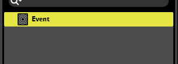
An event contains and is primarily composed of tracks, instruments, and parameters. The parameters trigger the instruments, which route audio content into the tracks. The tracks route into other tracks, or into the event's master track. The output of the event's master track routes into the project mixer. In addition, the event's parameters can control and manipulate most properties of the event, of the event's instruments, and of effects on the event's tracks; and the event's logic markers can manipulate the event's timeline parameter.
Events can be created and organized in the events browser, edited in the event editor window, routed in the mixer window, and auditioned in context in the sandbox window.
For more information about using events through your game's code, see API docs.
Events are 'instanced,' meaning that multiple copies of a single event can play concurrently. This allows a single event to be used for multiple similar in-game occurrences; For example, a game with a '45 magnum gunshot' event would create a new instance of that event each time a gun was fired in-game.
Any aspect of an event that is randomized or which can vary over the event's lifetime can vary between instances of an event. This means that separate concurrent instances of a single event can each have unique parameter values and be producing different output at any given time.
Note that the event instance displayed in the event editor window is a specific instance that exists for the purpose of auditioning the event through that window. It does not represent any other instances of that event, and as such, does not indicate or allow you to change the parameter values and playback states of other instances you may hear.
In most cases, an event's tracks function as buses within the event, allowing each event instance to function as a small mixer. An event's tracks can be viewed in the event editor window by selecting the event in the events browser. (Automation tracks do not function as buses, and are instead used in conjunction with parameters to control an event's properties. See Automation and Modulation for more information.)
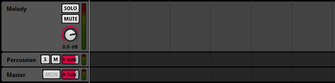
Audio tracks function as group buses. Each audio track creates a submix from the outputs of instruments on that audio track, as well as of any other group tracks in the event that route into it.
Return tracks function as return buses, and are valid targets for sends on other tracks within the event.
The master track functions as an event's master bus. All signals within an event eventually route into the event's master track, and from there into the project mixer.
Each Audio, return or master track has a signal chain, a series of effects applied to the signal as it routes through a track. Selecting a track in the event editor window's editor allows you to view its signal chain in the deck.
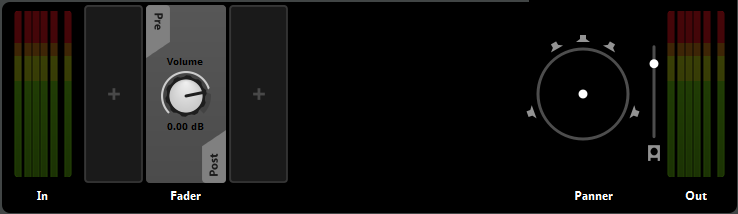
The effects modules in a signal chain are applied from left to right in the order they appear in the deck. By default, a signal chain contains only its "fader," a volume control.
All audio signals in an event originate from 'instruments,' the basic noisemaking components of an event.
Instruments appear as colored boxes on the tracks of an event in the editor. These colored boxes are called "trigger regions."
Each instrument is on a particular parameter sheet that can trigger it, and only appears in the event editor window's editor when that parameter sheet is displayed. The range of parameter values covered by an instrument's trigger region represents the range of parameter values that can trigger the instrument.
An instrument is triggered when the parameter sheet's playback position begins to overlap the instrument's trigger region. A triggered instrument begins producing a signal that is output to the track the instrument is on.
When the playback position ceases overlapping an instrument's trigger region, that instrument is untriggered. The behavior of an untriggered instrument is determined by a number of factors, including its cut behavior, whether it is synchronous or asynchronous, and whether any of its properties are subject to AHDSR modulation.
Clicking on an instrument in the event editor window's editor selects it, and displays its panel in the deck, allowing you to edit its properties and content. For more information about instrument properties, see Instrument Reference.
Many instruments feature a playlist. Playlists can contain multiple audio files, or even events located elsewhere in the project. Whenever the instrument is triggered, the event or audio file to play is selected from the playlist according to the instrument's playlist settings; By default, a playlist entry is selected at random. For more information about playlist behavior, see the instrument reference chapter.
The color of a trigger region is customizable, and has no bearing on the instrument's behavior.
Note that instruments were called "Sound Modules" in FMOD Studio versions 1.09 and earlier.
Instruments on the timeline may be either synchronous or asynchronous. Instruments on parameter sheets other than the timeline are always asynchronous.
In synchronous instruments, the part of the audio file that plays always corresponds to the part of the trigger region's waveform graphic overlapped by the timeline playback position. This allows you to seek within the audio files in a synchronous instrument by repositioning the timeline playback position.
In asynchronous instruments, the precise position of the playback position within the trigger region has no bearing on which part of each audio asset plays. This allows you to treat instruments as switches that can be turned on and off, adding sounds to the event on demand.
The synchronous or asynchronous behavior of an instrument can be identified by the appearance of the waveform graphics drawn on its trigger region: If the waveforms stretch all the way to the edge of the trigger region, the instrument is synchronous; And if the waveforms are contained within borders, the instrument is asynchronous.
Note that synchronous instruments were called "Timelocked Sound Modules" in FMOD Studio versions 1.09 and earlier.
Audio files are the raw building blocks used to construct instruments and events in FMOD Studio.
Audio files are organised and managed in the assets browser, which can be found under the Assets tab of the event editor window, as well as in the audio bin window. You can import audio files into your project by dragging them into the assets browser from a file manager application, or from FMOD.io.
Once an audio file has been imported, you can add it to an instrument's playlist by dragging the file onto that playlist in the deck. You can also drag an audio file directly onto an audio track in order to create a single instrument that uses that audio file, or onto the events browser to create an event that uses it.
Note that the compression format of audio files imported into FMOD Studio has no effect on your game's size or performance. This is because FMOD Studio's build process recompresses all audio files according to their platform encoding settings, effectively replacing any existing compression.
FMOD Studio has a lot in common with Digital Audio Workstations (DAWs), but it does have one major difference: Almost all the effects and behaviours it applies to your game's sound are processed in real time as your game is being played, rather than in advance. This allows the behaviour of events to change dynamically in response to changing circumstances in your game, but also takes up small amounts of CPU and memory.
If your game features events that make use of FMOD Studio's advanced features, but which always behave in exactly the same way then triggered, you may be able to save resources by 'baking' the desired behaviour into your audio files in a third party DAW prior to importing them into FMOD Studio.
Effects can be inserted at any point in your project's signal chains in order to process and modify the signal at that point. The properties of those effects can then be updated and adjusted in real time as your game runs, allowing the sound of anything and everything in your game to be processed differently in response to changing in-game circumstances.
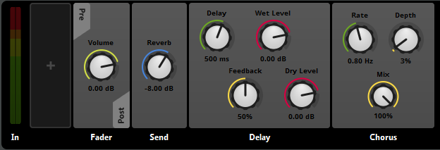
There are a variety of effects available, each with numerous possible applications. For example, a game could use FMOD Multiband EQ effects to cutoff high frequencies whenever the player avatar is underwater, or to represent hearing damage after an explosion. The same game might use an FMOD Delay effect to simulate the echo in a cavern, or to produce feedback on an in-game two-way radio.
In FMOD Studio, each effect in a signal chain is represented by a panel in the deck when a bus or track is selected in the mixing desk or editor.
Most effects can be inserted into the signal chains of both mixer buses and event tracks. Within a signal chain, effects can be arranged in almost any order, both pre- and post-fader, and can be interspersed freely with other effects and sends.
You can add new effect modules to a signal chain by right-clicking on the signal chain where you want the effect to be placed and selecting 'Add Effect' or 'Insert Effect' from the context menu.
For more information about specific effects modules, see the effects module reference chapter.
Preset effects are a way of creating the same behavior in a large number of events without having to update each of those events individually when you want to change that behavior.
All instances of a preset effect in a project share the same base property values, modulators, and automation. Changing the base property values, modulators, or automation of any instance of a preset effect therefore changes all other instances of that preset effect. Preset effects in the deck feature a preset icon, which resembles an arrow inside a circle. This icon blinks whenever the preset effect changes.
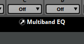 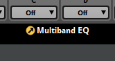
This means that you can, for example, create a single spatializer preset effect for all the 3D events in your project. If you later need to tweak this spatializer's min and max distance properties, you only need to make the change to the preset effect once, instead of having to change each and every 3D event in your project individually.
Note that different instances of a preset effect may be in different states due to differences in their parent event instances. For example, two event instances containing instances of a preset effect may have different parameter values, and thus result in those preset effect instances having different final property values if they feature automation on that parameter.
You can manage your project's preset effects in the effects tab of the preset browser window.
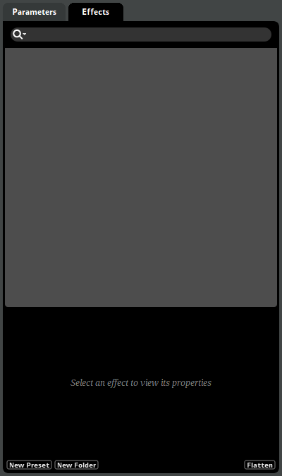
To create a new preset effect, right-click in the empty space in the preset effects browser and select the "New Preset" context menu item, then navigate to the specific effect you want the new preset effect to be. You can also convert an existing effect in your project into a preset effect by right-clicking on it in the deck and selecting "Convert to Preset" from the context menu.
Note that you can create multiple preset effects from the same effect, each with its own base property values, modulation, and automation. You can also add effects to signal chains that aren't instances of a preset effect, even if you have already created a preset effect of that same effect, and that such effects' base property values, modulation and automation can be changed without affecting the preset effect, and vice versa.
Once a preset effect has been created, you can add instances of it to signal chains throughout your project. To add an instance of a preset effect to a signal chain, either drag it from the presets browser to the deck, or right-click on the deck and select "Add Effect > Preset Effects" (or "Insert Effect > Preset Effects") and then the specific effect you want from the context menu.
You can detach an instance of a preset effect from the preset effect. This causes it to become an independent effect whose base property values, automation, and modulation can be adjusted without altering the base property values, automation, and modulation of the preset effect. To disconnect an instance of a preset effect from that preset effect, right-click on it in the deck and select "Detach from Preset" from the context menu.
Events don't have to be "fire and forget." There are two major ways to change what an event is doing while it's playing, and those two ways are parameters and cues.
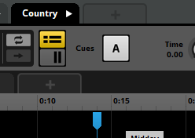
Parameters are by far the more common of the two. They're properties of an event that can be updated at any time by your game's code, and you can hook them up to nearly anything else in an event: You can use parameters to automate the values of event properties, and to control the event's timeline through logic markers.
However, the most common use of parameters is to trigger instruments. Every instrument is associated with one or more parameters and has a specific range of values for each of the parameters required to trigger it. When the event's parameters are all set to values in those ranges, the instrument is triggered, and begins producing output.
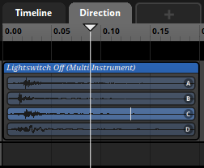
Every event starts with one parameter, called the "Timeline." The timeline has the special property of automatically advancing: As long as the event is playing, the value of the timeline parameter increases at a steady rate.
Parameters other than the timeline are collectively known as 'game parameters,' because they're used to represent the state of your game.
You can change the current value of any parameter in your game's code by using the FMOD Studio programmer's API.
Parameter values can also be controlled by modulators, or by events that reference the event the parameter is in.
Every instance of every event can have different parameter values, allowing different instances of the same event to produce wildly different output.
For more information about parameters, see the Parameters section of the Authoring Events chapter.
Cues are much less common than parameters. A cue tells the timeline playback position of an event instance to move past the next sustain point.
For more information about cues and sustain points, see Studio::EventInstance::triggerCue in the Programmer's API documentation.
Events in FMOD Studio do not exist in a vacuum. Their output is routed into the project mixer. The project mixer consists of a number of interconnected buses. By customizing these buses' routing, properties and effects in the mixer window, it's possible to create a complex mix for your project.
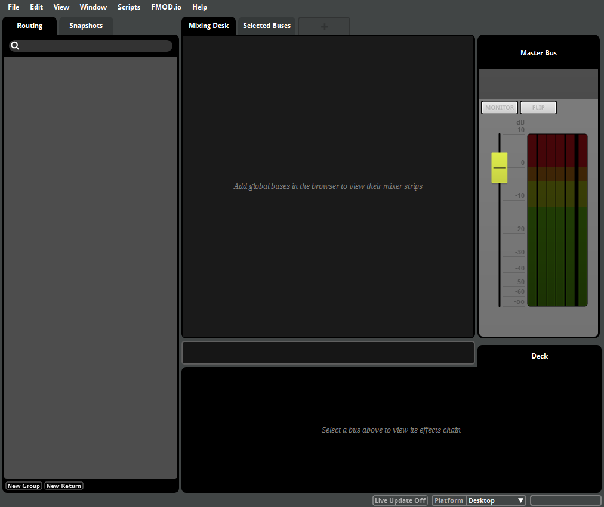
Events and return buses are routed into group buses or the master bus, group buses are routed into other group buses, and eventually everything routes into the project's master bus. Every bus along the way creates a submix of all the signals that route into it.
Your project's routing can be inspected and modified in the routing browser. In this browser, the signal flows from right to left, and from the buses and events at the left edge of the browser into the project's master bus. You can also add sends to buses' signal chains to duplicate their signals, and send the duplicated signals to return buses.
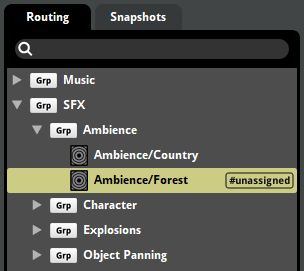
Every bus has its own volume property and signal chain that alters the signal passing through it. By customizing the properties and signal chains of your buses, you can tailor each submix in your project. The signal chain of any bus can be viewed in the deck by selecting the bus in the mixing desk or mixer window's routing browser.
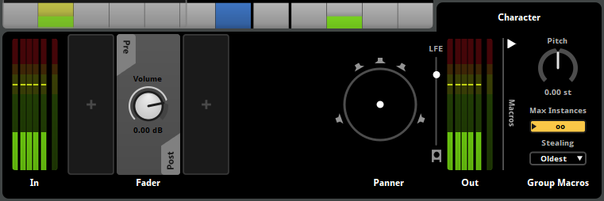
Once your project's routing and effects are in place, you can use the mixer strips in the mixing desk to tweak and customize the overall mix to fit your project's requirements.
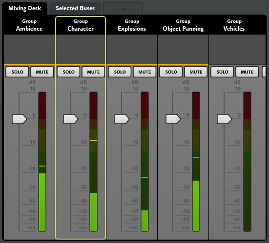
The meter on each mixer strip represents the output volume of the corresponding bus, and a horizontal orange line indicates that the corresponding bus is active. You can click and drag a mixer strip's slider handle to adjust the bus' fader volume. If you connect FMOD Studio to a running copy of your game, you can even adjust the mix of your game project as it runs.
It's even possible to make the mix dynamic by creating snapshots that adjust the values some or all of the properties in the mixer when active. For more information about snapshots, see Snapshots and the Tracks View in the Mixing chapter.
A bank is a collection of events from your FMOD Studio project, formatted and compressed for use in your game. The purpose of banks is to let you choose which content from your project is loaded at any given time, allowing you greater control over how much memory your game's audio consumes. Banks can be created, edited, and organized in the banks browser, under the banks tab of the event editor window.
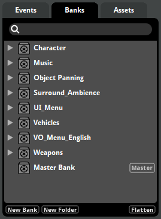
Before an event can be used in your game, you need to assign it to at least one bank, and that bank needs to be built. To assign an event to a bank, right-click on the event in the events browser, then select 'Assign to Bank' from the context menu. For information about building banks, see the Building section of this chapter.
In addition to normal banks, every FMOD Studio project contains at least one "master bank." The master bank contains data relevant to your entire FMOD Studio project, and so must be loaded into memory before any event in any bank may be used by your game.
Because the master bank is loaded into memory at all times, it is generally best for performance to keep it as small as possible, by assigning no events to it.
To build your project's banks for use in your game, select 'File > Build...' You can also build individual banks by right-clicking on the desired bank in the banks browser and selecting 'Build...' from the context menu, and you can build your banks for every platform in your project platforms list by selecting 'File > Build All Platforms...'
Building your banks causes the built ".bank" files to appear in your project's built banks output directory. These built bank files are all your game code needs to make use of the events they contain.
In most cases, your game's code should load a bank into memory with Studio::System::loadBankFile and Studio::Bank::loadSampleData some time before using any of the events it contains, then create and play instances of that bank's events with Studio::EventDescription::createInstance and Studio::EventInstance::start.
Multiple banks may be loaded into memory simultaneously, but to conserve memory it's best to unload banks that your game is unlikely to use in the near future.
For more detailed information about using built banks in the FMOD Studio Programmer's API, see the FMOD Studio Programmer's API Documentation.
When developing content in FMOD Studio, it is useful to bear in mind the platforms that content is intended to be used on. Depending on the needs of your project, different platforms may budget different amounts of memory and processing power for audio, and some platforms may support different numbers and configurations of speakers.
Because platforms are so important, you are able to control certain settings in FMOD Studio on a per-platform basis. These properties include project output format, and the encoding settings of audio files.
By default, each FMOD Studio project has one platform, called "Desktop." The current platform is displayed in the bottom-right of most FMOD Studio windows. You can change the current platform by clicking on the current platform display and selecting a new platform from the dropdown menu.
You can rename platforms, add additional platforms to the project, and change the speaker configurations and default encoding settings of existing platforms in the "Build" tab of the "Preferences" window.